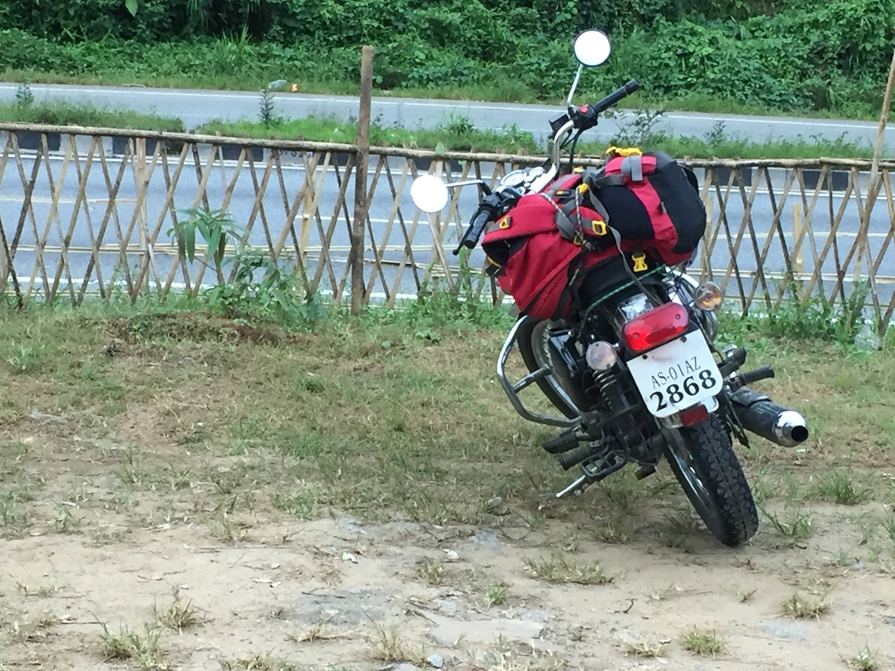

Meghalaya - My first solo trip
GREAT THINGS NEVER CAME FROM COMFORT ZONES.
There was a time I loved computers and Internet. Well a pretty neat invention of all time, getting us all done with a click. From having a virtual social life to setting up business, from making travels plan easier to flying to Moon & back.
Yes! We can have it all. But what we have? A machine holding us from all the beautiful adventures out there and making us well assured that this life is easy and amazing at the same time.
I had a pretty great time in 11 years span from school to college and then at work, all made easy with technology. Until I started to realise, that work places are totally life changing, which plugs out the real country boy from you and turn you into a professional with jitters.
I've been traveling for 2-3 years now, always taking small trips with friends & sometimes colleagues to nearby beaches and mountains. That was the time when people wanted to travel North-East India and explore the unknown 7 states of the country. With multiple failed plans in group, I decided not to waste time anymore and take a solo trip, and that was it.

Punjabi Dhaba at NH27. Enroute to Shillong from Guwahati.
So, I read a lot of blogs, planned 2 weeks off from office and booked a one way air ticket to Guwahati, Assam. I planned 9 days to explore Meghalaya and then travel to my home town in Lucknow, Uttar Pradesh via train - Guwahati New Delhi Special.
As I started my journey on Saturday morning from Bangalore. Travelling all the way to the airport, such a long ride, I started at 6 in the morning with a flight to depart at 9:20am. I was in Guwahati by 12 noon. Outside the airport was a freedom with warmth of Assam. I took a taxi to Himalayan Phoenix Bike Rental from where I had pre-enquired for booking a Royal Enfield.
After a little lunch, I went for Shillong, Meghalaya by 3pm on a long highway of National Highway 27.
By 7pm in the evening I was in Shillong, figuring out how to reach my Airbnb host, Ritchin who is a graphic designer & an amazing sketch artist.
Had a great time in Shillong and then in Cherrapunji and Dawki. Please visit individual links to read further about my experiences from each town of Meghalaya. While returning I stayed a day in Shillong. After riding to Guwahati all day long next day, I grabbed a beer at Underdogs and hopped on the train to Lucknow.
While I was writing all this, I am also planning a trip to Auli, Uttrakhand.
You too can be a part of great memories, it's just you have to plan it out and do it, anyways.
Money is all papers. Have a good day.
Also, here is a link to a song which that helped me writing this post.
All I wanted was a car by Brad Paisley